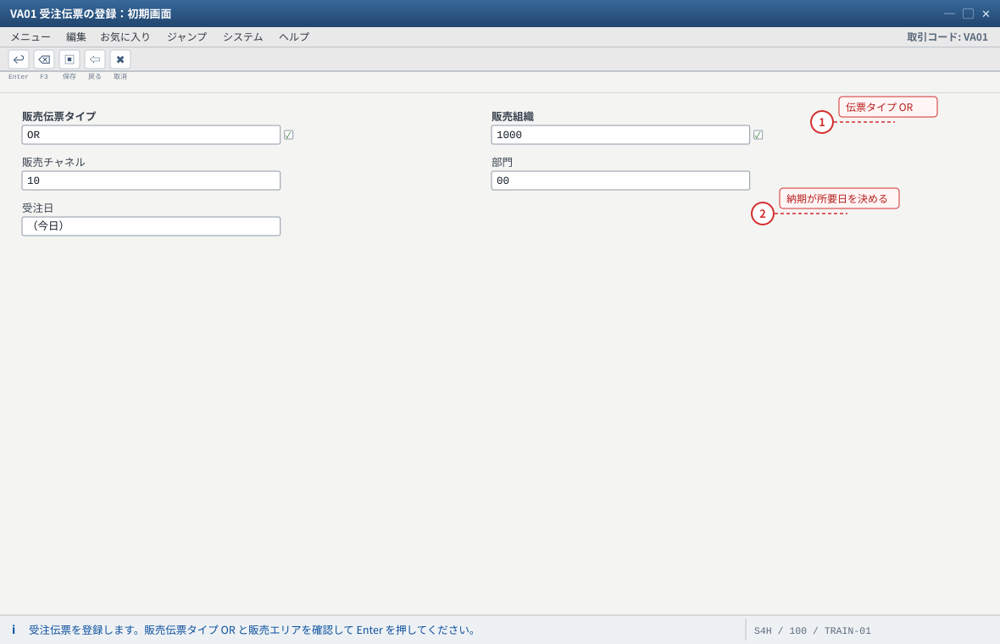
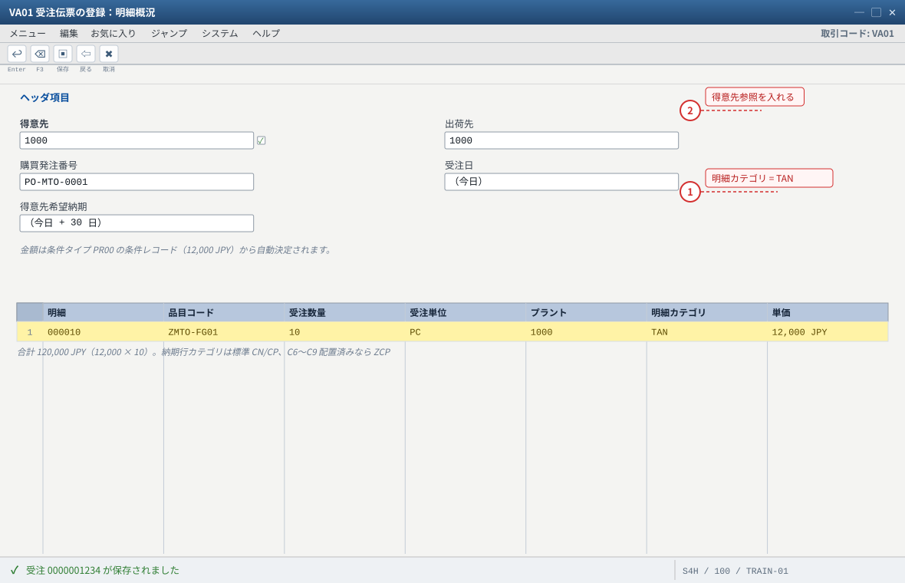
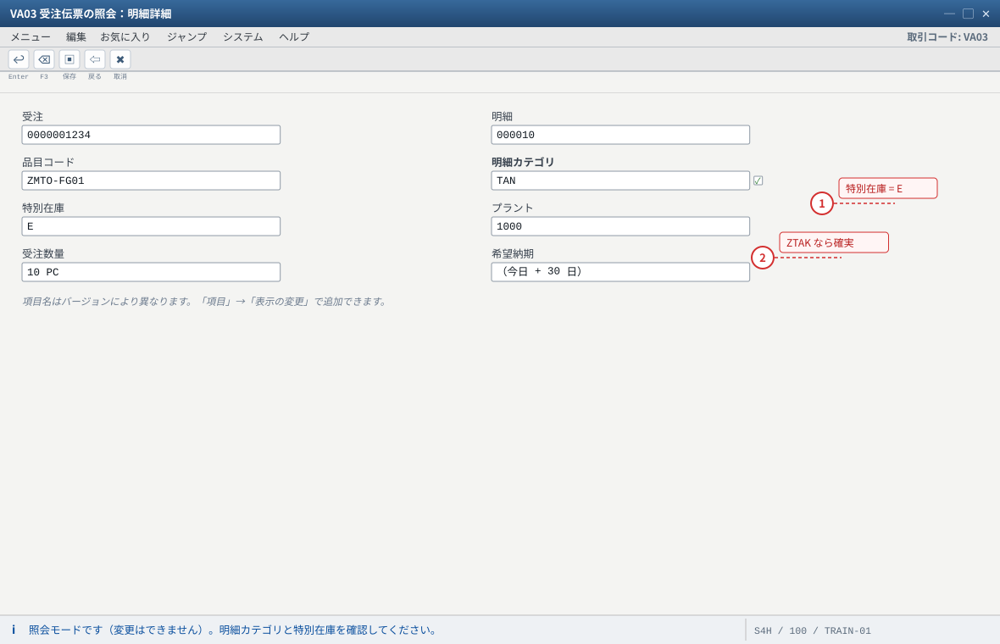
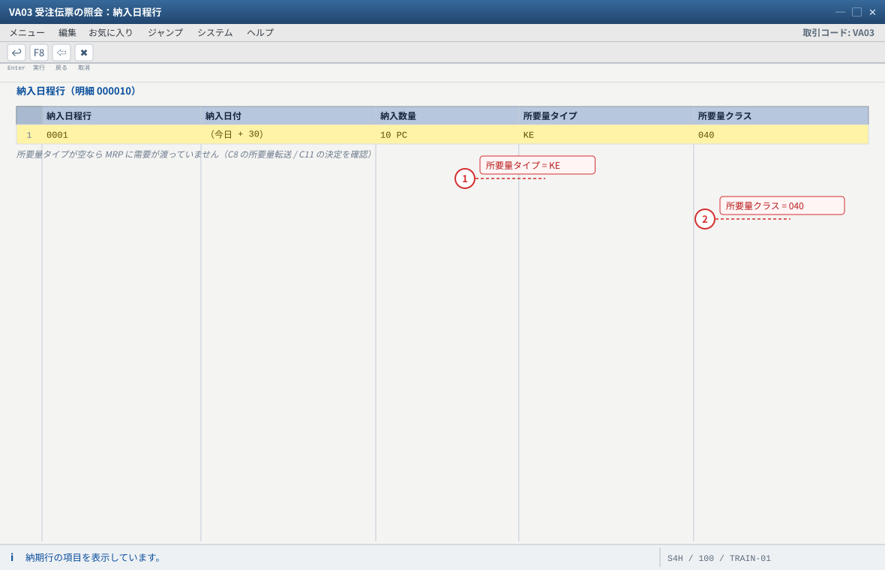
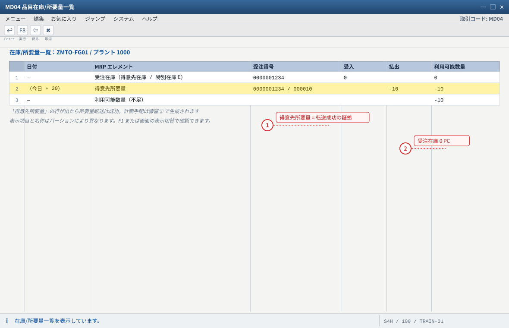
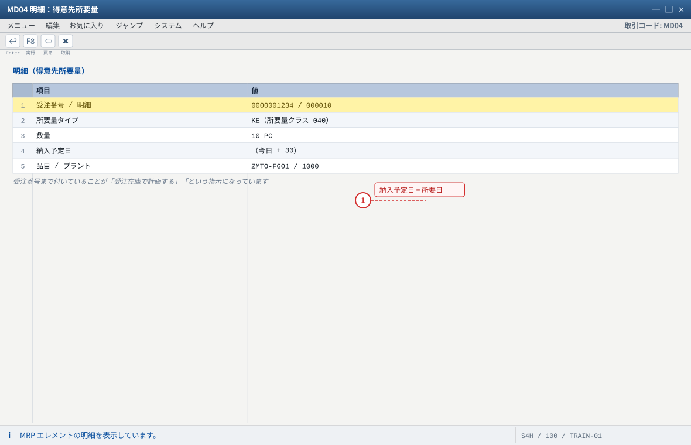
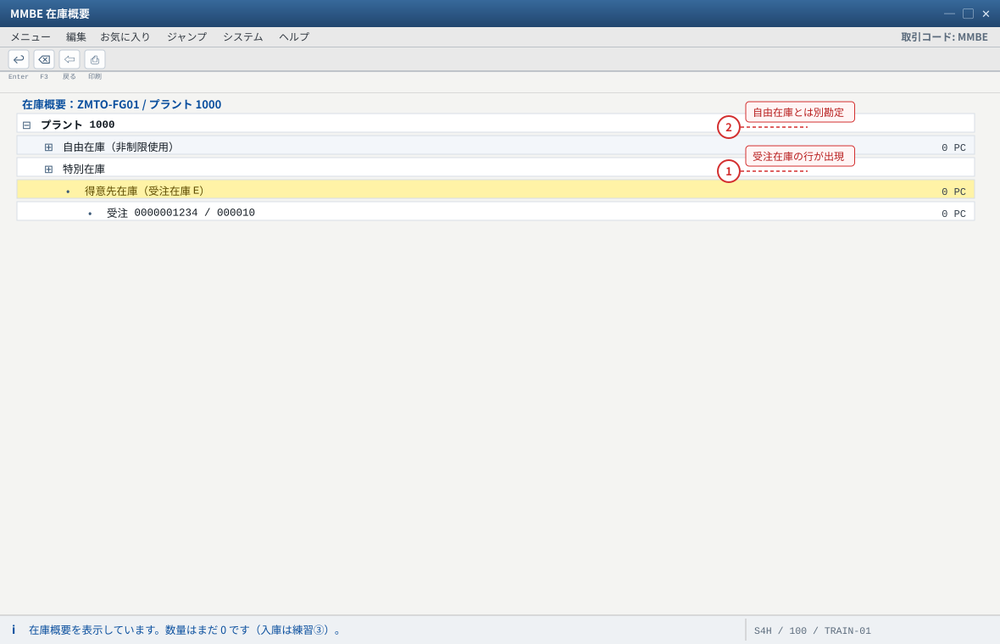
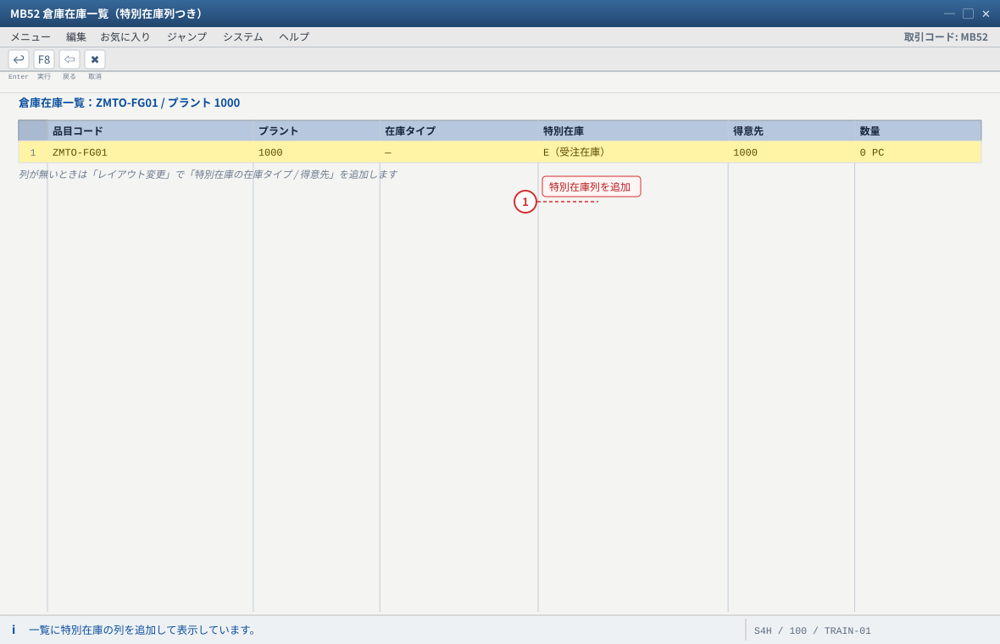
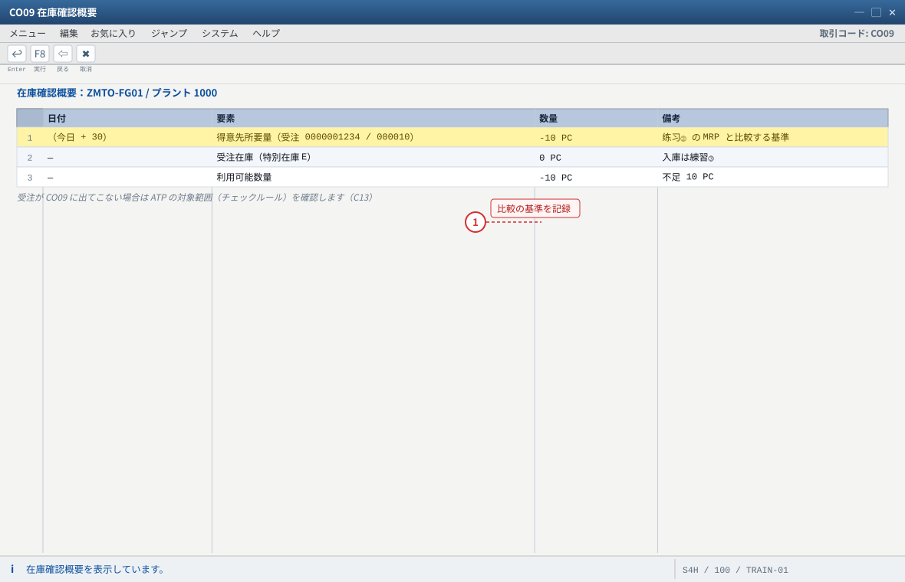

练习① 受注登録与所要量転送の確認
关于本页的「画面イメージ」：这些图是按 SAP GUI 标准布局重绘的示意图，不是实机截图。字段名、字段顺序、按钮位置会因版本与自定义而不同，请以自系统的画面为准（各 STEP 的「自系统での確認方法」里写了确认用的 T-code 与表）。若是想换成实机截图，把同名
.png 放进 assets/gui/ 后执行 python3 tools/swap_gui_images.py <site> --apply 即可一键替换。本练习完成什么
输入一张特注品受注（
ZMTO-FG01 × 10 PC），然后用 5 个画面证明「这张受注已经变成 PP 看得懂的需求，并且挂在受注在庫（特在 E）上」：
① VA03 明細カテゴリ/納入日程行カテゴリ/所要量タイプ ② MD04 得意先所要量 ③ MMBE/MB52 受注在庫 ④ CO09 可用量。
预计 40 分钟。本练习之后系统里的状态是：受注在庫 0 PC、需求 10 PC、尚无计划手配（那是练习②）。1 VA01 受注登録
10 PC / +30 日
10 PC / +30 日
→
2 VA03 明細確認
TAN・所要量タイプ
TAN・所要量タイプ
→
3 MD04 所要量転送
得意先所要量
得意先所要量
→
4 MMBE 受注在庫
特在 E = 0
特在 E = 0
→
5 CO09 可用量
ATP 要素
ATP 要素
→
✓ 验收
1-1 受注登録（VA01）
输入值
| 项目 | 值 | 说明 |
|---|---|---|
| 販売伝票タイプ | OR | 标准受注 |
| 販売組織 / チャネル / 部門 | 1000 / 10 / 00 | 贩卖区域 |
| 得意先（受注先） | 1000 | 出荷先も同じ（出荷先未指定なら自動で受注先） |
| 購買発注番号（得意先参照） | PO-MTO-0001 | 客户单号（自由文本，便于后续追踪） |
| 受注日 / 得意先希望納期 | 今日 / 今日 + 30 日 | 纳期会决定 MRP 的所要日 |
| 明細 10：品目 / 数量 / プラント | ZMTO-FG01 / 10 PC / 1000 | 受注生産品 |
| 明細 10：単価（条件 PR00） | 12,000 JPY（自動決定） | 配置 C4 的条件记录应自动带出 |
VA01→ 伝票タイプOR、販売組織1000/ チャネル10/ 部門00→ Enter。- 输入 得意先
1000、購買発注番号PO-MTO-0001、受注日（今日）、得意先希望納期（+30 日）。Enter 后系统会补出 出荷先/支払条件/出荷条件等（来自得意先マスタ）。 - 明細行：品目
ZMTO-FG01、受注数量10、プラント1000、納入日付 = 希望纳期 → Enter。 - 看系统给了什么：明細行右侧的「明細カテゴリ」应为
TAN（若练习⑤ 已把品目改成Z001，则应为ZTAK）。若不是，先别保存，回到 C7 检查 VOV4。 - 按「納入日程行」按钮（或双击明細行 → 納入日程行）：确认 納入日程行カテゴリ（标准
CN/CP，或你的ZCP）与 確認済納入日付。
※ 若纳期行为空、或提示「納入日程行は許可されていません」→ 明細カテゴリ的「納入日程行許可」或 VOV5 未配好（C6/C9）。 - 确认合计金额 = 120,000 JPY（若为 0 → 条件记录缺失，见 C4；可以先保存，练习④ 之前补上并重定价）。
- 「保存」→ 记录受注番号（例
0000001234），后续所有练习都用它。状态信息栏会显示「受注 0000001234 が保存されました」。
保存后可能出现的警告（多数可继续）
・「与信限度額を超過」→ 与信管理が有効な環境。练习用得意先的与信额度调高，或请管理员临时放宽（
・「品目の在庫確認がマイナス」→ ATP 確認の結果。本练习本来就没有库存，若明細状态里出现「未確認」属预期。
FD32/UKM_BP）。・「品目の在庫確認がマイナス」→ ATP 確認の結果。本练习本来就没有库存，若明細状态里出现「未確認」属预期。

- 1 OR = 標準受注。ここを間違えると明細カテゴリの決定が変わります
- 2 受注日は今日、得意先希望納期は +30 日。この納期が MRP の所要日になります
自システムでの確認：VA01 の初期画面項目は「画面項目の選択」で追加できます。

- 1 明細カテゴリが TAN であることを保存前に確認。違うなら C7（VOV4）へ戻ります
- 2 購買発注番号に客户单号 PO-MTO-0001 を入れると後で伝票を追いやすくなります
1-2 明細与所要量タイプ的确认（VA03）
VA03→ 受注番号 → Enter（照会模式，不能改）。- 光标放在明細 10 → 「明細」→「明細詳細」（またはダブルクリック）→ 确认：
・明細カテゴリ =TAN（/ZTAK）
・特別在庫 =Eが出ているか（标准 TAN 可能为空 → 受注在庫仍可由戦略グループ+MRP4 成立；若你的目标是「明細単位で確実に E」，请用ZTAK）
・プラント =1000 - 「納入日程行」タブ → 纳期行的右侧项目里找 所要量タイプ（例
KE）与 所要量クラス（例040）。
项目看不到时：用「項目」→「表示の変更」把所要量タイプ加到画面上，或直接进OVZG确认 20 → KE → 040 这条链（C10/C11）。 - 记录三件事：明細カテゴリ / 納入日程行カテゴリ / 所要量タイプ。这三个值在后面的排障里是你的第一手证据。
为什么要看这几个字段
明細カテゴリ → 決定「明細の振る舞い」（価格・納期行・特別在庫）；納入日程行カテゴリ → 決定「需求要不要给 MRP」；
所要量タイプ/クラス → 決定「需求是哪种需求、要不要进受注在庫、要不要评价」。三者凑齐，MTO 才成立。

- 1 特別在庫 E が出ていれば、この明細は受注在庫に紐づくことが確定します
- 2 標準 TAN では空のこともあります。その場合も戦略グループ 20 + MRP4 で受注在庫は成立します
自システムでの確認：明細カテゴリ / 納入日程行カテゴリ / 所要量タイプ の 3 つを記録しておくと、後の排障で最初の証拠になります。

- 1 KE は戦略グループ 20 から決まった所要量タイプ。ここが空なら MTO の連鎖が切れています
- 2 040 は受注生産の所要量クラス（個別在庫・MRP 転送あり）
自システムでの確認：項目が見えないときは「表示の変更」で所要量タイプを追加するか、OVZG で 20 → KE → 040 の連鎖を直接確認します。
1-3 所要量転送的确认（MD04）——本练习的核心
MD04→ 品目ZMTO-FG01/ プラント1000→ Enter。- 画面应出现类似下面的行（数值示意，具体列名随版本略有差异）：
| MD04 の行（要素） | 期待值 | 含义（读法） |
|---|---|---|
| 受注在庫（得意先在庫 / 特別在庫 E） | 0 PC | 本受注专属库存。现在还没有，练习③ 会变成 10 |
| 得意先所要量（受注 0000001234 / 000010） | -10 PC（納入予定日 = 希望纳期） | 所要量転送成功的证据 |
| 利用可能数量 / 手持ち | -10 PC（不足） | 没有库存可供，所以接下来必须跑 MRP |
| 計画手配・製造指図 | まだ無し | 练习② 生成 |
- 把「得意先所要量」行打到明细（选择该行 → 「明細」或双击）：应能看到 受注番号 + 明細番号、数量 10、納入予定日。
- 切换表示：
MD04的表示切替（例：得意先別／受注別の表示）——切过去可以看到只属于这个客户的库存/需求（MTO 的「个别」就体现在这里）。表示项目与名称随版本不同，用 F1 或画面按钮确认。 - 若看不到得意先所要量行，立即做这 3 个检查（这也是练习⑤ 故障表的第 1 号故障）：
① 納入日程行カテゴリの「所要量転送」が OFF（VOV6/SE16N: TVEP-BEDSD）；
② 明細カテゴリの「納入日程行許可」が OFF（VOV7）；
③ 納入日程行カテゴリ的決定取到了错误的类别（VOV5：明細カテゴリ + MRPタイプ）。
判断口诀
MD04 に出たら成功、出なかったら SD 側の設定（明細カテゴリ / 納入日程行カテゴリ）。
MD04 に出たのに計画手配が出ない → PP 側（MRPタイプ・手配タイプ・批量・MRP 対象）＝练习② 的内容。

- 1 得意先所要量＝受注から MRP に渡った需求。数量が受注数量 10 と一致していれば伝達は正しい
- 2 受注在庫の行が出ていること自体が「この受注に専属の在庫を持たせる」対象になった証拠です
自システムでの確認：表示切替で「得意先別 / 受注別」にすると、特定の受注だけの在庫・需求を追えます。行が出ないときは ① TVEP-BEDSD（所要量転送）② VOV7 の納入日程行許可 ③ VOV5 の決定 を順に確認します。

- 1 納入予定日は受注の希望納期。ここがずれていると MRP の所要日もずれます
自システムでの確認：項目名はバージョンにより異なります（所要量タイプが表示されない場合は「項目」で追加してください）。
1-4 受注在庫（特在 E）的确认（MMBE / MB52）
MMBE→ 品目ZMTO-FG01/ プラント1000→ Enter → 展开「特別在庫」或「得意先在庫」部分。- 现在应显示 受注在庫 0 PC（受注 0000001234 / 000010 付き）——行本身出现很重要：它证明这张受注已经被系统识别为「要有专属库存」的对象。
MB52→ 品目ZMTO-FG01/ プラント1000→ 执行：一览里同样能看到特别在庫相关列（若列表没有该列，用「レイアウト変更」加上「特別在庫の在庫タイプ/得意先」列）。- （可选）
SE16N→ 表VBBS（受注在庫の集計）与VBBE（個別所要量）→ 输入受注番号，观察表层面的记录。能看到记录 = 系统真的建了受注在庫的对象。

- 1 行そのものが出ていることが重要。この受注が「専属庫」を持つ対象として認識されています
- 2 自由在庫に数量があっても受注在庫には回りません（MTO は自分の入庫だけを使う）
自システムでの確認：数量 0 でも行が出れば OK。受注在庫の数量は表 MSKA（SOBKZ = E）に入ります（SE16N）。

- 1 MB52 は「表の一覧」で確認する入口。MMBE と両方で見ておくと排障が速くなります
自システムでの確認：表 VBBS（受注在庫の集計）と VBBE（個別所要量）を SE16N で見ると、受注番号でレコードを確認できます。
1-5 在庫確認（ATP）的确认（CO09）
CO09→ 品目ZMTO-FG01/ プラント1000→ 执行。- 看「要素明细」：应能看到这张受注的需求（10 PC）以及自己的受注在庫（0）。
若受注没有出现在 CO09，说明 ATP 対象の範囲（チェックルール/スコープ）没包含它——配置 C13 再确认一次。 - 记录「可用数量」与「不足数量」。有了这两条，练习② 的 MRP 结果才有可比对象。

- 1 ここで見た「利用可能数量 −10」が、練習② の MRP 後にどう変わるかを比べます
自システムでの確認：ATP の検査範囲は在庫確認グループ / チェックルールの設定で決まります。
期待结果汇总（本练习做完时的系统状态）
| # | 确认项目 | 期待值 | 确认方法 |
|---|---|---|---|
| 1 | 受注が保存されている | 受注番号あり・状態 = 受注完了/未処理 | VA03 |
| 2 | 明細カテゴリ | TAN（または ZTAK） | VA03 明細詳細 |
| 3 | 納入日程行カテゴリ / 確認済納入日付 | CN/CP（または ZCP）/ 日付あり | VA03 納入日程行 |
| 4 | 所要量タイプ／クラス | KE → 040（環境により差異あり） | VA03 納入日程行（/ OVZG） |
| 5 | MD04 得意先所要量 | -10 PC（受注番号・明細付き） | MD04 |
| 6 | 受注在庫 E | 0 PC（受注番号付きで表示される） | MMBE/MB52（/ SE16N: VBBS） |
| 7 | 可用量 / 不足 | 可用 0 / 不足 10 PC | CO09 |
| 8 | 金額 | 120,000 JPY（12,000 × 10） | VA03 明細 → 条件画面 |
つまずきと対処（本练习版）
| 症状 | 最可能的根因 | 确认 / 対処 |
|---|---|---|
| 纳期行が出ない・「納入日程行は許可されていません」 | 明細カテゴリの「納入日程行許可」OFF 或 VOV5 未配 | VOV7 明細カテゴリ → 納入日程行許可 ON；VOV5 补 明細カテゴリ + MRPタイプ 的行 |
明細カテゴリが TAN にならず TANN 等になる | VOV4 の決定キー不一致（品目カテゴリグループ / 用途 / 上位明細） | VOV4 用 4 键复核；品目 MM03 販売組織2 の品目カテゴリグループを确认 |
| MD04 に何も出ない（受注行も無い） | 納入日程行カテゴリの所要量転送 OFF／プラント違い | SE16N: TVEP 看 BEDSD；MD04 的プラントを 1000 に |
| MD04 に「得意先所要量」は出るが数量が違う | 受注数量/単位、或纳期行分割 | 纳期行の数量・納入日を确认（受注数量と一致するか） |
| MMBE に受注在庫の行が出ない | MRP4 個別/包括所要量が空、所要量クラスに個別在庫なし | C2・C10 を确认 |
| 「与信限度額を超過」警告 | 与信管理 | FD32 提高额度，或与信担当者リリース；练习中可忽略警告继续 |
| 単価が 0 になる | 条件レコード PR00 無し / 有効期間外 / 得意先違う | VK13 确认；VA02 → 明細 → 条件 → 「価格決定の更新」で再决定 |
| 「勘定設定グループが見つからない」等で保存不可 | 得意先/品目の 勘定設定グループ（OVK3/OVK1）未配 | 与 FI 顾问确认 VKOA 的設定；练习环境通常已配好 |
验收（完成基准）
✓ 练习①验收清单
- 受注を 1 件保存した（受注番号を記録した）。
VA03で 明細カテゴリ / 納入日程行カテゴリ / 所要量タイプ を言える（スクリーンショット可）。MD04に「得意先所要量 -10 PC（受注番号付き）」がある。MMBEに受注在庫（特別在庫 E、受注番号付き、0 PC）の行がある。CO09で可用量 0 / 不足 10 PC を確認した。- 本练习中出现的任何不一致，都已定位到「是 SD 侧还是 PP 侧」的问题（能在故障表里指出对应行）。
発展：用 BAPI 批量造受注（参考コード，请在自环境验证）
练习中要造多张受注时可用 SE38 执行下面的程序（结构名与参数以你系统的 BAPI 定义为准；投入前先在测试受注上跑一次）。
abap · 参考コード（要自環境検証）REPORT zmto_create_order. DATA: lv_salesdocument TYPE bapivbeln-vbeln, lt_items_in TYPE TABLE OF bapisditm, lt_items_inx TYPE TABLE OF bapisditmx, lt_partners TYPE TABLE OF bapiparnr, lt_schedules TYPE TABLE OF bapischdl, lt_return TYPE TABLE OF bapiret2, ls_header_in TYPE bapisdhd1, ls_header_inx TYPE bapisdhd1x. ls_header_in-doc_type = 'OR'. ls_header_in-sales_org = '1000'. ls_header_in-distr_chan = '10'. ls_header_in-division = '00'. ls_header_in-purch_no_c = 'PO-MTO-0001'. ls_header_in-req_date_h = sy-datum + 30. ls_header_inx-updateflag = 'I'. ls_header_inx-doc_type = 'X'. ls_header_inx-sales_org = 'X'. ls_header_inx-distr_chan = 'X'. ls_header_inx-division = 'X'. ls_header_inx-purch_no_c = 'X'. ls_header_inx-req_date_h = 'X'. lt_items_in = VALUE #( ( itm_number = '000010' material = 'ZMTO-FG01' plant = '1000' target_qty = '10' target_qu = 'PC' ) ). lt_items_inx = VALUE #( ( itm_number = '000010' updateflag = 'I' material = 'X' plant = 'X' target_qty = 'X' target_qu = 'X' ) ). lt_partners = VALUE #( ( partn_role = 'AG' partn_numb = '0000001000' ) ( partn_role = 'WE' partn_numb = '0000001000' ) ). lt_schedules = VALUE #( ( itm_number = '000010' sched_line = '0001' req_date = sy-datum + 30 req_qty = '10' ) ). CALL FUNCTION 'BAPI_SALESORDER_CREATEFROMDAT2' EXPORTING order_header_in = ls_header_in order_header_inx = ls_header_inx IMPORTING salesdocument = lv_salesdocument TABLES return = lt_return order_items_in = lt_items_in order_items_inx = lt_items_inx order_partners = lt_partners order_schedules_in = lt_schedules. READ TABLE lt_return WITH KEY type = 'E' TRANSPORTING NO FIELDS. IF sy-subrc <> 0. CALL FUNCTION 'BAPI_TRANSACTION_COMMIT' EXPORTING wait = abap_true. WRITE: / '受注番号:', lv_salesdocument. ELSE. CALL FUNCTION 'BAPI_TRANSACTION_ROLLBACK'. LOOP AT lt_return ASSIGNING FIELD-SYMBOL(<ls_ret>) WHERE type CA 'EA'. WRITE: / <ls_ret>-type, <ls_ret>-message. ENDLOOP. ENDIF.
参考コード的用法
①
BAPI_SALESORDER_CREATEFROMDAT2 的构造（header/items/partners/schedules 四组）在所有版本里都存在，但字段名随版本可能不同；
② 用 SE37 打开该函数模块确认参数名；③ 练习环境中 partn_numb 需要 10 位（前置零）。下一步 → 练习② MRP 実行と製造指図の登録